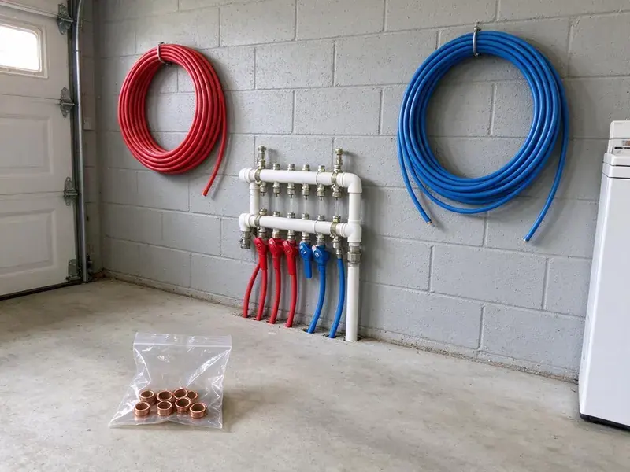

Water Heater Expansion Tank Installation in Parma, OH
Dripping relief valve or banging pipes in Parma, OH? A correctly sized expansion tank usually fixes the problem in under two hours.
- Local Parma Team
- Licensed Plumbers
- Licensed Local Plumbers
- Precharged to Your Pressure
Stop Pressure Spikes From Wearing Out Your Water Heater in Parma, OH
Call HRL Plumbing for a free estimate before the relief valve drips again.
Water Heater Expansion Tank Installation in Parma, OH
HRL Plumbing installs water heater expansion tanks that keep heated water from overpressurizing your plumbing. Water expands as it heats, by most of a gallon in a 50 gallon tank, and on a closed system that extra volume has nowhere to go except into your pipes, fixtures and relief valve. The tank gives it a place to go.
Our expertise includes:
- Protecting heaters and pipes from pressure spikes
- Expansion tank sizing and installation
- Strapping and bracket support for the tank

Additional Plumbing Installation Services in Parma, OH
We install water heaters, pumps, lines, and fixtures across Parma, OH with precision workmanship that meets every local code.


Customers
Why Choose HRL Plumbing for Water Heater Expansion Tank Installation in Parma, OH?
Careful assessment comes before any tank goes in. We check the heater size, the PRV and the static pressure, then choose the tank and set the charge so it does the job for years instead of failing early from being undersized or charged wrong. A wrong guess means another tank.
- Prevent Leaks, Lower peak pressure cuts the risk of leaks and bursts.
- Properly Supported, Tanks are strapped or bracketed so their weight never hangs on the pipe.
- Measured Pressure, We test static pressure and match the air charge to it.
Citywide Coverage
No matter where you live in Parma, a trained technician can be there quickly. We bring the system up to code while we are there, which usually means the tank, a proper strap and sometimes a new relief valve if the old one has been weeping for a long time. Weeping valves get replaced.
Experienced Team
Quality work is what each plumber at HRL Plumbing cares about. They support every tank so the pipe carries no weight, check every joint for leaks, and leave the area clean with the old tank hauled away. We leave it tidy.
Safety-First Approach
Careful installation prevents the hazards that come with high pressure. We check every connection for leaks under full pressure, and we confirm the relief valve still works, because the expansion tank lowers pressure but the T and P valve is still the last line of defense. Each one has its job.
Trusted Certified Parma Plumbing Services Professionals
At HRL Plumbing, we take pride in licensed, certified plumbing services throughout Parma, OH. Credentials matter in this trade. Every repair, install and maintenance visit follows strict safety and quality rules, and the plumbers doing the work carry recognized industry credentials.
Call Us Now PHCC Plumbing Contractor Recognition
PHCC Plumbing Contractor Recognition Better Business Bureau (BBB) Accreditation
Better Business Bureau (BBB) Accreditation Angi Certified Pro
Angi Certified Pro ISO 9001 Quality Management Certification
ISO 9001 Quality Management CertificationThe Expansion Tank Work We Do in Parma, OH
Watts Expansion Tank Installation in Parma, OH
Watts makes a potable expansion tank line we install often, the PLT series. They ship precharged, and we set them to your pressure on site, which matters because the factory charge rarely matches the actual static pressure in a Parma, OH home. We use a simple tire gauge.

Preventative Expansion Tank Maintenance in Parma, OH
Air precharge leaks down slowly over the years, like a bike tire. We check it during water heater service, and with the water pressure relieved we top the charge back up to match your house pressure, then look over the fittings and the strap in Parma, OH. Low charge means short life.
Brands and Quality Products in Parma, OH
Potable-rated tanks are the only kind we install on drinking water. Watts, Amtrol and Z-Flex all make good ones, with liners that keep water off bare steel and diaphragms rated for drinking water, which matters because a hydronic heating tank looks similar but is not approved for your supply in Parma, OH. The label tells you which is which.
Expansion Tank Replacement in Parma, OH
The bladder or diaphragm inside the tank is what fails. Once it tears, water fills the air side, the tank goes heavy, and the pressure spikes come right back, so we replace the tank with a correctly sized unit and check the precharge before it goes on the line in Parma, OH. Replacement beats repair.
Commercial Expansion Tank Solutions in Parma, OH
Commercial water heaters move far more water, so the expansion volume is bigger too. Total system volume, storage tanks and all, sets the tank size, then floor-mount it with proper supports and schedule the install around your business hours in Parma, OH. Hot water stays on as long as possible.
Standard Water Heater Expansion Tank Installation in Parma
Most tank-style water heaters on a closed system need an expansion tank on the cold supply. We tee it into the cold line a few feet from the heater, precharge the air side to your measured house pressure, and strap it to the wall so the weight never hangs on the pipe in your Parma home. We watch the gauge through one heat cycle.
Replacing Old Expansion Tanks in Parma
Tapping the tank tells you a lot. The top half of a healthy tank sounds hollow, while a waterlogged one sounds dull from top to bottom and feels heavy, and if pressing the air valve spits water instead of air, the diaphragm has failed and the tank in your Parma home needs replacing. The old tank leaves with us.

Code-Compliant Installations in Parma, OH
Plumbing work in Ohio follows a statewide plumbing code based on the International Plumbing Code, with residential work covered by the state residential code. Local plumbing codes often require an expansion tank whenever a backflow device or PRV creates a closed system. Permits get pulled when they apply, and the local rule gets followed, so the work passes inspection in Parma, OH and nothing comes back to bite you when the house sells. It helps if you ever file a claim.
Expansion Tank Installers Near You in Parma, OH
Relief valve dripping and searching for help nearby? Give us a call before you replace the heater, because a quick pressure test tells us right away whether thermal expansion is the cause, and a tank costs far less than a new heater. It takes a few minutes.
Expansion tank work near you in Parma, OH comes from a local crew. Response times stay short across the area, and since most installs take an hour or two, we can often fit yours in the same day you call, especially if the relief valve is already dripping. We move drips up the list.
HRL Plumbing at a Glance
- Fully licensed plumbing team covering Parma, OH
- Same-day appointments and 24/7 emergency response
- Upfront, flat-rate pricing before work begins
- 4.9-star rated by 673+ Ohio customers
Parma Map
Parma Information
- Population
- 78,951
- Area codes
- 440/216/330
- Service area
- Parma and communities within 40 miles
- Nearby
- Cleveland, Lakewood, Cuyahoga Falls, Euclid
Private wells serve many rural homes, and iron, sulfur and hardness are frequent issues that call for filtration or softening. In Parma, OH, a water heater expansion tank absorbs the pressure that heated water creates, protecting the heater and the pipes.
Expert Services
Reach out to HRL Plumbing for honest, reliable plumbing from people who know the trade in Parma, OH.
Our Specialized Plumbing Services in Parma, OH
At HRL Plumbing, we handle the full list of plumbing services across Parma, OH. From leak detection to full system installs, our team works fast and charges fair prices on homes and commercial properties alike. Take a look at our core services below:


How We Install Expansion Tanks in Parma, OH
Every expansion tank job in Parma follows the same order.
Request a Quote
Call (740) 449-7505 or use the online form. We talk through the job and send a clear price.
On-Site Assessment
A plumber looks at your Parma heater and plumbing to choose the size and location.
Professional Installation
We install the tank to local Ohio code and manufacturer specs, strapped and leak checked.
Frequently Asked Questions About Water Heater Expansion Tank Installation in Parma
Plan on $250 to $500 in Parma for a typical expansion tank job. Final cost depends on tank size, install difficulty and any pipe changes, and we give you that number after looking at the heater and measuring your pressure on site. No surprises on the bill.
We recommend a professional install. The size, the placement, the support and the charge all have to be correct, and a mistake on any of them leads to leaks, early failure or a tank that does nothing to protect your heater. It is routine work for a plumber.
Most tanks last 5 to 10 years. Private wells serve many rural homes, and iron, sulfur and hardness are common issues that call for filtration or softening. Water quality, pressure and install quality all affect that range, and a check during water heater service will catch a failing tank before the relief valve starts dripping. Low precharge shortens life.
Water spitting from the air valve is the clearest sign. Other clues are rust on the tank, banging pipes or pressure that swings, since all of those show up when the tank stops absorbing expansion and pressure starts climbing again. A tap test helps confirm it.
Our installs come with a labor warranty, and the tank carries the manufacturer's coverage. Both warranties get explained when we install, including how long the tank is covered and what to do if it ever goes waterlogged before the warranty runs out. Save your receipt.
It looks simple, but the job involves pressurized lines, correct sizing and setting the precharge. Getting the charge wrong shortens the tank's life, and a tank hung on the pipe without support can crack a fitting, so we recommend a licensed plumber for a clean, code-compliant install. Mistakes cause leaks.
Yes, on both the tank and our labor. Tank coverage comes from the maker, and labor coverage comes from us, and we go over the specific terms during your visit so you know who to call and for how long. Most tanks carry one to five years.
About one to two hours for a typical install. The time includes testing, installing and watching a heating cycle, and we keep the water off for as little of that as possible, usually under an hour. Tight spaces add time.
What Our Customers Say About Our Plumbing Experts

Sofia M.
Two new toilets went in during one visit. The tech set them on new wax rings and swapped the old supply lines. He also noticed our bathroom faucet dripping and replaced the cartridge while he was there. No mess left behind.
Toilet Installation · Euclid, OH
Marcus H.
Grease from the fryer line kept clogging the kitchen drain at my diner. HRL Plumbing hydro jetted the line after closing, showed me the buildup on camera, and set us up on a quarterly cleaning so it does not catch us on a Friday again.
Drain Cleaning · Akron, OHJames P.
Our restaurant had a slow leak at the hand sink that was rotting the cabinet base. HRL Plumbing came in at six in the morning before prep, replaced the trap and both supply lines, and was packed up before my first cook clocked in.
Commercial Plumbing · Cleveland, OH
Carlos V.
Our house still had galvanized pipe, and upstairs the shower was a trickle. The crew repiped everything in PEX over three days and patched every drywall hole before they left. The pressure difference is night and day.
Repiping · Euclid, OHJessica T.
We were adding a gas range in a kitchen remodel and needed a new line run from the meter. The plumber pulled the permit, ran the pipe through the crawl space, and had it inspected and approved within the week.
Gas Line Repair · Cuyahoga Falls, OHLaura S.
Our 40 gallon tank started leaking from the bottom after thirteen years. The tech hauled the old one out, set a new unit with a fresh expansion tank, and had hot water running in about four hours. He took the old tank with him too.
Water Heater Replacement · Cuyahoga Falls, OH